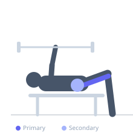
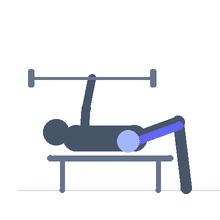

Exercise guide / Kneeling Leg Curl
Kneeling Leg Curl
The kneeling leg curl is performed with the feet anchored and the knees on a padded surface, using the hamstrings to curl the body toward the heels from a kneeling position with the torso upright. Unlike the Nordic hamstring curl which is a full eccentric movement, the kneeling leg curl is a concentric-focused variation that develops hamstring strength closer to the shortened position and serves as a bridge exercise between machine curls and the Nordic curl.
Primary muscles
biceps femoris long head
semitendinosus
semimembranosus
Secondary muscles
gluteus maximus
Stabilizers
erector spinae
transverse abdominis
Equipment
No Equipment (Bodyweight)


Starting position
- Kneel on a padded surface with the feet anchored behind (use a partner, barbell, or machine). Start with the torso vertical over the knees.
Setup
- Have a partner hold the ankles or wedge the heels under a barbell secured at floor height. Knee padding is essential.
Steps
- Step 1: Kneel upright with feet anchored and hips extended.
- Step 2: Lower the torso forward a small amount, then use the hamstrings to pull the body back upright — the motion is a 'pull toward the heels' action.
- Step 3: Hold the upright position briefly, then lower forward under control.
- Step 4: Repeat for the prescribed reps, controlling both phases.
- Step 5: Avoid falling too far forward — this transitions into a Nordic curl and should be progressed to separately.
Coaching cues
- Pull your heels toward your glutes — think of it like a standing leg curl
- Keep the hips extended — don't fold forward at the hip
- Own both directions — control the lowering too
Breathing
- Exhale as you pull up. Inhale as you lower.
Range of motion
- Work in the range the hamstrings can actively control — typically 20–60° initially.
Tempo
- 2-1-2-0
Common mistakes
- Hinging at the hip (the motion should come from knee flexion, not hip hinging)
- Swinging the torso rather than contracting the hamstrings
- Moving through a range the hamstrings cannot control
Safety
- If unable to perform even a minimal controlled range, begin with machine leg curls to build hamstring strength first
- Knee padding is essential to prevent bruising
Training
- strength: 5–10 reps
- hypertrophy: 8–15 reps
- endurance: 12–20 reps
- strength: 2–4 sets
- hypertrophy: 2–4 sets
- endurance: 2–3 sets
- Rest: {'strength': 150, 'hypertrophy': 90, 'endurance': 60}